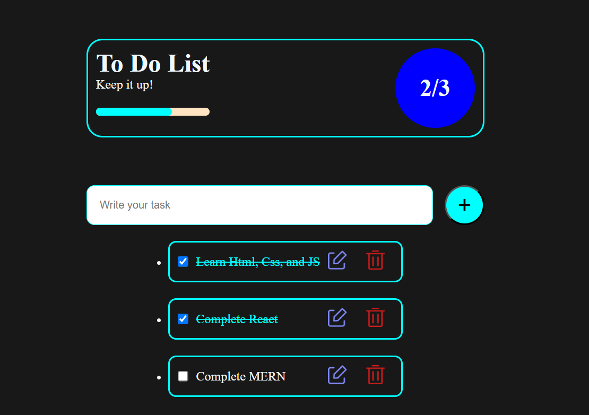
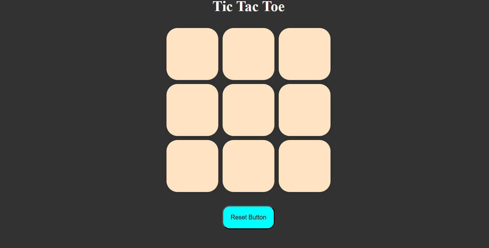
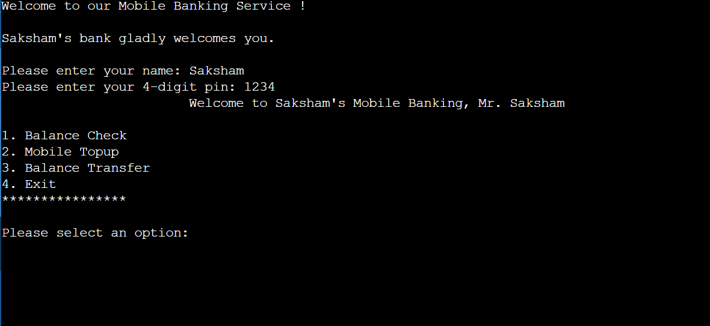

This is a basic clone of Amazon, built using HTML and CSS. While the design resembles the original, some features are not fully functional. It focuses on showcasing the layout rather than interactive features.

To-Do-List
This project is a simple To-Do List application built using HTML, CSS, and JavaScript. It allows users to add, edit, delete, and mark tasks as completed. The intuitive design and functionality make it a great tool for everyday task management.

Tic-Tac-Toe
This is a simple Tic Tac Toe game built using HTML, CSS, and JavaScript. It allows two players to play on a grid, taking turns to place 'X' and 'O'. The game determines the winner once there is a three-in-a-row pattern.

Mobile Banking
This is a simple mobile banking software developed using the C programming language. The software demonstrates basic banking functionalities and provides an interactive console interface to simulate essential banking operations.